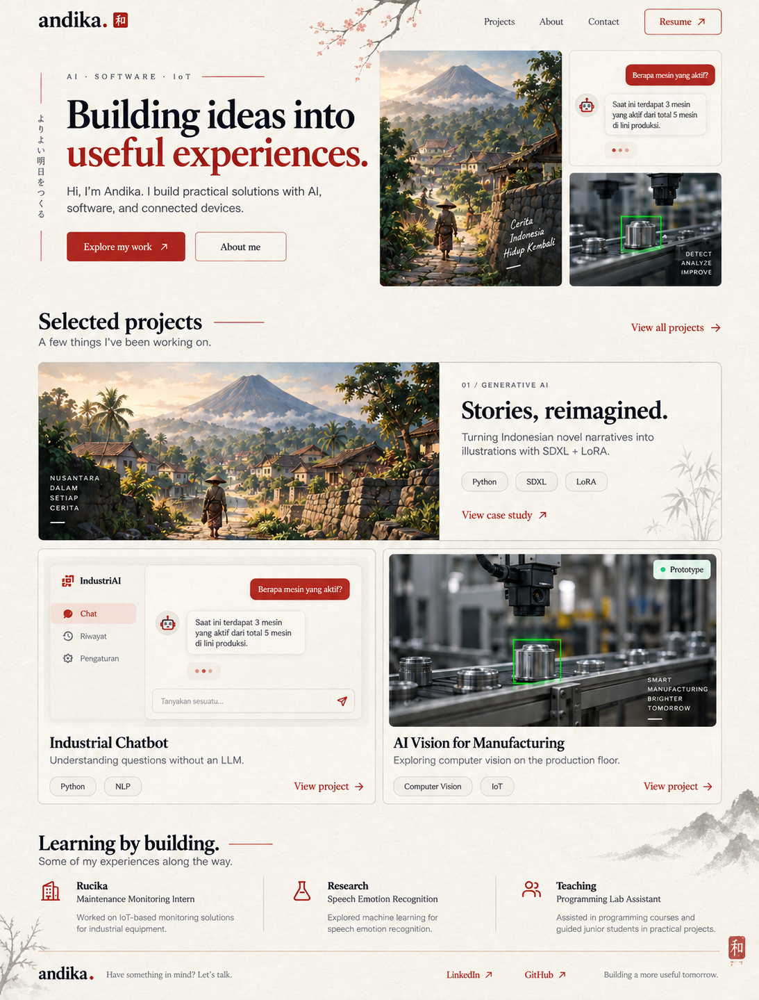

Observation and detection
Define the relevant observation area and investigate visual conditions associated with a retained product.
A camera prototype for detecting products that fail to fall from an injection molding machine.
A product that remains in an injection molding machine after a cycle can interrupt the production workflow. This prototype explores visual monitoring to identify that condition.
Developed during a Maintenance Monitoring internship at PT Rucika. The project is presented as a prototype, without claims of production-wide deployment or verified reject reduction.
I designed and developed the camera prototype, exploring how computer vision could support product detection in the injection molding workflow.
Define the relevant observation area and investigate visual conditions associated with a retained product.
Record the setup, test conditions, detection behavior, and limitations.
Documentation outline: replace these descriptions with your exact implementation details.
Illustrative workflow. Hardware, detection method, and downstream actions must match the actual prototype.
Capture the relevant production area.
Focus on the region containing the product.
Determine whether a product remains.
Show the observation for review.

Space for your actual demonstration video: normal cycle, retained product, and detection response.
Video not attachedDescribe the expected observation and include the corresponding screenshot.
Describe the detection response and include the corresponding screenshot.
Use test records to explain behavior under the conditions relevant to your prototype.
| Test scenario | Expected behavior | Observed result |
|---|---|---|
| Normal product release | No retained-product indication | Not recorded here |
| Product does not fall | Retained-product indication | Not recorded here |
| Lighting or partial occlusion | Document robustness and failure cases | Not recorded here |
Sample test plan only; no test outcomes or accuracy figures are implied.